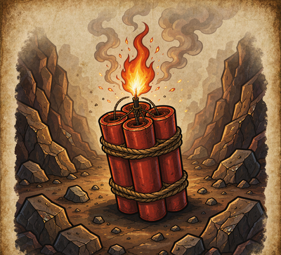
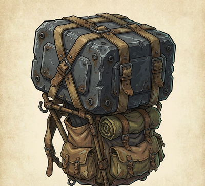

14 / 14
大鼠

22 / 22
孢囊行者

45 / 45
铁颚督军

75 / 75
掘者
红框已取消 —— 目标由「卡牌落到谁身上」决定。把下面任意一张卡拖到敌人身上松手 （鼠标 / 触屏都可以）；直接点卡 = 打当前目标（默认最前的敌人，出手动画会告诉你打的是谁）； 拖到空处松手 = 卡牌弹回。敌人血量见底会自动回满，方便反复试。




| 拖拽投放 | 拿起卡 → 指到谁高亮谁 → 松手即对谁出牌。投放即选目标，不再需要先点敌人。 |
| 直接点卡 | 保留：打「当前目标」（默认最前；上次打到谁就是谁）。命中动画即反馈。 |
| 点敌人本体 | 仍可切换当前目标，但不再画红框——只在你把卡拖过去时才亮。 |
| 常驻指示 | 无（M53c）：M53 的脚下红色光晕读感是「红框」，已按反馈整体移除。目标靠拖拽高亮 / 悬停浮层「目标」小标 / 出手动画即时呈现。 |
| 投放 / 落空 | 攻击卡：拖到敌人身上 = 打它；落空弹回（攻击必须有明确目标）。 技能 / 能力牌（作用自己）：落到哪都出牌 —— 落在敌人身上不会偷换攻击目标，落空则飞向掘者生效（M53b）。 |
| 群体卡 | 「打到全体」的卡落到任何敌人身上都生效（全部高亮受击）。 |
| 触屏 | Pointer Events 一套通吃；拖起后锁定页面滚动（touch-action）。 |
| ① 拿起 | 原卡变半透明占位；幽灵卡放大 1.06 + 投影加深，随移动方向轻倾 |
| ② 瞄准 | 未被指到的敌人退到 68% 透明度聚焦视线；指到的辉光 + 放大 + 脚下光晕 |
| ③ 命中 | 卡飞向敌人缩小淡出 → 敌人后仰一顿（hit-knock）+ 闪红（hit-flash）+ 飘字 + 血条实降 |
| ④ 落空 | 幽灵卡带一点回弹曲线飞回原位 |
| ⑤ 待机 | 呼吸动画照常（复用 art.css，不与拖拽冲突） |
| 对照 | 右上角可临时恢复旧版红框，比较「选中感」的差异 |
| style.css | 删 / 关掉 .eunit.is-target::before 红框；新增 is-aim / is-aiming / ghost 样式 |
| render.js | 卡片加 Pointer 拖拽委托；HUD 提示「点敌人切换目标」→「拖卡到敌人身上出牌」 |
| combat.js | playCard(uid, targetIdx) 增加显式目标参数（现有 tap 流不变） |
| 测试 | 探针断言：红框已不存在 / 拖到 eidx=2 后目标变更 / 落空弹回 / 触屏可拖 |